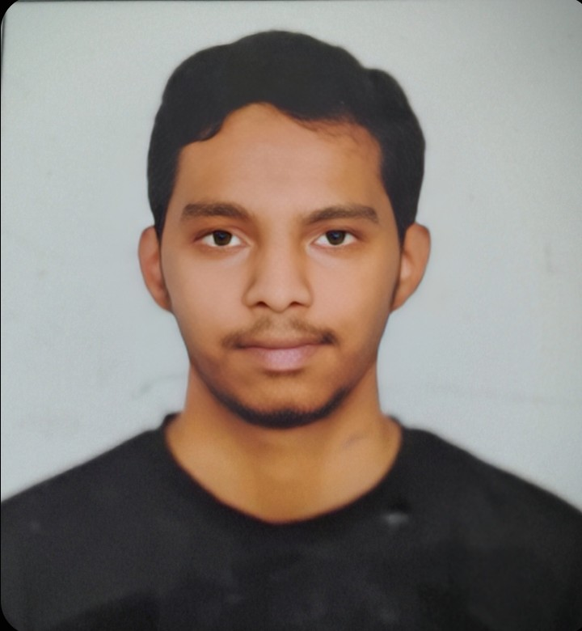

A digital portfolio showcasing my journey in engineering, technical projects, and continuous learning.
I'm Nitish T S, a 1st-year Electronics and Communication Engineering student at Bangalore Institute of Technology. My curiosity in electronics started long before college — with broken gadgets, dismantled remotes, and a genuine obsession with how things actually work.
From my first blinking LED to writing my first working C program — every small win has pushed me deeper into understanding circuits, signals, and how software talks to real hardware. I love how each challenge pushes me to learn new technologies and think precisely about problem-solving — no guesswork, just methodical engineering.
Nitish T S
B.E. Electronics & Communication Engineering
1st Year (2025 – 2029)
Karnataka, India
nitishts@gmail.com
I am currently pursuing my Bachelor of Engineering (B.E.) in Electronics and Communication Engineering. Through this rigorous program, I am developing a deep understanding of core electronic principles, communication systems, and modern technological frameworks.
My foundational engineering journey began by successfully securing a highly competitive KCET rank of 11,500. This crucial milestone validated my rigorous preparation in mathematics and sciences, ultimately paving the way for my admission into the prestigious Electronics and Communication Engineering branch at BIT.
Prior to engineering, I maintained a strong and consistent academic record, passing my 12th standard with 93% and my 10th standard with 90%. Beyond the classroom, I am also a dedicated athlete, demonstrating my commitment to physical excellence by winning first place in the High Jump during my school's annual sports day.
My technical foundation is built on robust programming languages essential for hardware and software integration. I am highly proficient in C programming for low-level system interactions, Python for high-level logic and automation, Linux for development environments, and TCL for scripting within electronic design automation.
Algorithm design and logical implementation.
Command line operations and environments.
Beyond code, I excel in critical problem-solving and strategic project management. I thrive in environments that require analyzing complex bottlenecks and leading collaborative teams from initial concept to successful deployment.
Working closely with a dedicated team, we designed a comprehensive website and application aimed at solving the common issue of space management within academic environments. The system tracks and manages seat availability in real-time, blending frontend design and backend logic to optimize space utilization.
Collaborating heavily within a team setting to engineer a hardware battery level indicator utilizing BJTs and Diodes. My contributions focus heavily on precise circuit design and component integration to ensure accurate voltage threshold detection and reliable display outputs.
Working dynamically as part of a group to develop a sensor-based plant moisture level detector. I am significantly involved in the sensor calibration and logical mapping, bridging the critical gap between raw environmental data and actionable electronic alerts.
I am an avid sports enthusiast, regularly playing both football and cricket. These team sports help me stay physically fit while reinforcing the value of teamwork and communication.
I am a passionate gamer, frequently diving into titles like eFootball and Clash Royale. These digital battlegrounds serve as a fantastic way to sharpen quick decision-making.
I actively attend technical and skill-based workshops to continuously improve my knowledge base, stay updated with emerging technologies, and refine my practical engineering skills.

Feel free to reach out regarding potential collaborations, questions about my projects, or networking opportunities within the engineering field. I am always open to connecting.
8867643599